Culture
문화의 획일화 속에서 한국 전통의 가치를 현대적인 경험으로 재해석한다.
막힌 감각을 풀어내고, 새로운 취향을 발견하는 공간.
기존 구옥을 재해석하여 한국 전통 음료와 감각적 전시를 연결하는 문화 경험 공간을 제안한다. 노을의 색과 빛, 환경에 반응하는 건축을 통해 일상의 리듬에서 벗어나 새로운 취향을 발견하도록 설계했다.
공동 설계 프로젝트 · 2026 한국실내디자인학회 춘계학술발표대회
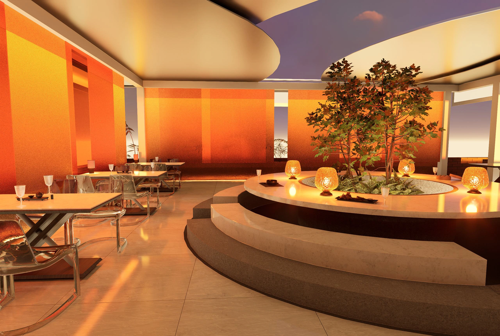
문화의 획일화 속에서 한국 전통의 가치를 현대적인 경험으로 재해석한다.
서울역과 숙대입구 사이의 구옥 주택을 재사용한다. 주거지역의 소음, 빛공해, 프라이버시를 설계 조건으로 고려한다.
외국인 관광객, 인근 대학생, 퇴근길 직장인의 문화 탐색과 휴식에 주목한다.
遮는 가리다, 解는 풀다. 노을은 낮과 밤이 교차하는 경계의 순간이며, 서로 다른 요소가 조화를 이루는 공간의 모티브가 된다.
유체의 흐름에서 유연한 곡선과 공간의 연속성을 도출한다.
노을의 색 변화에서 빛과 재료의 점진적 전환을 표현한다.
서로 다른 감각과 전통·현대의 조화를 하나의 경험으로 연결한다.
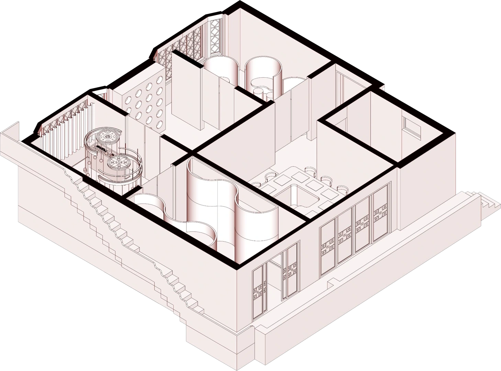
감각을 순차적으로 확장하는 전시 공간
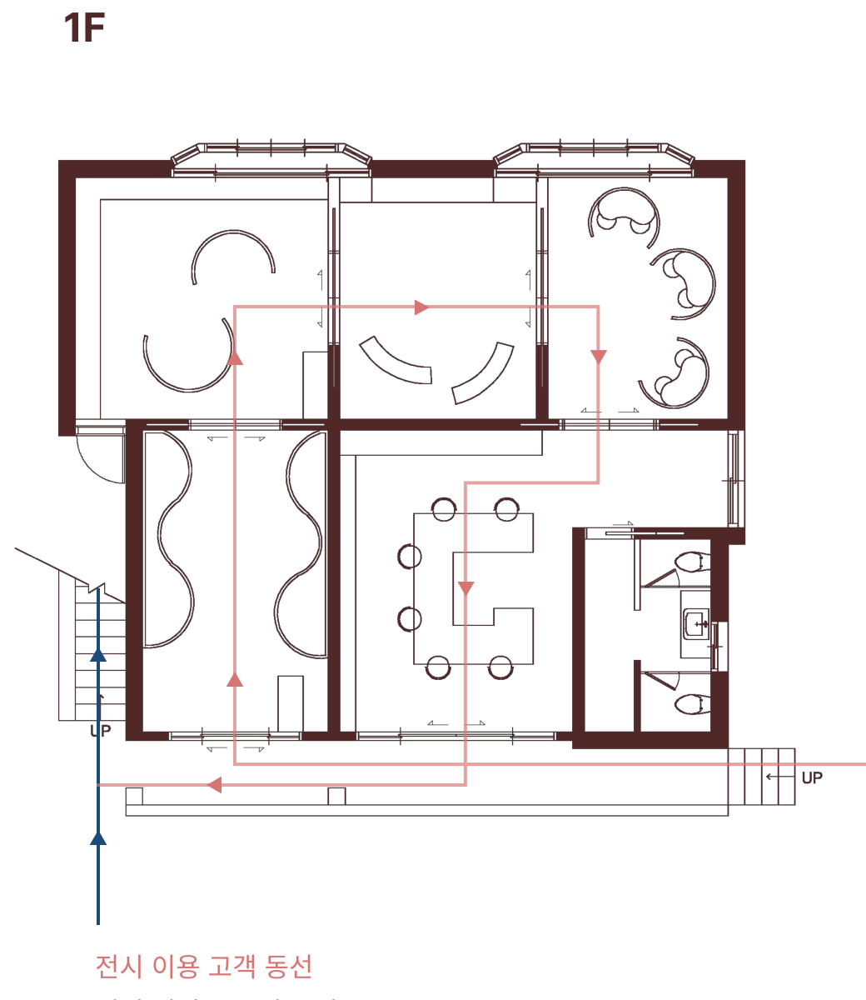
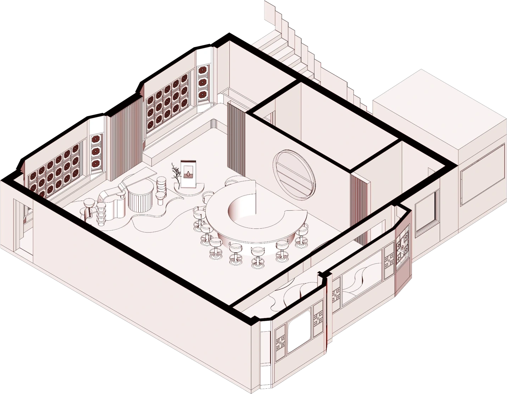
노을의 빛과 전통 창호를 경험하는 식음 공간
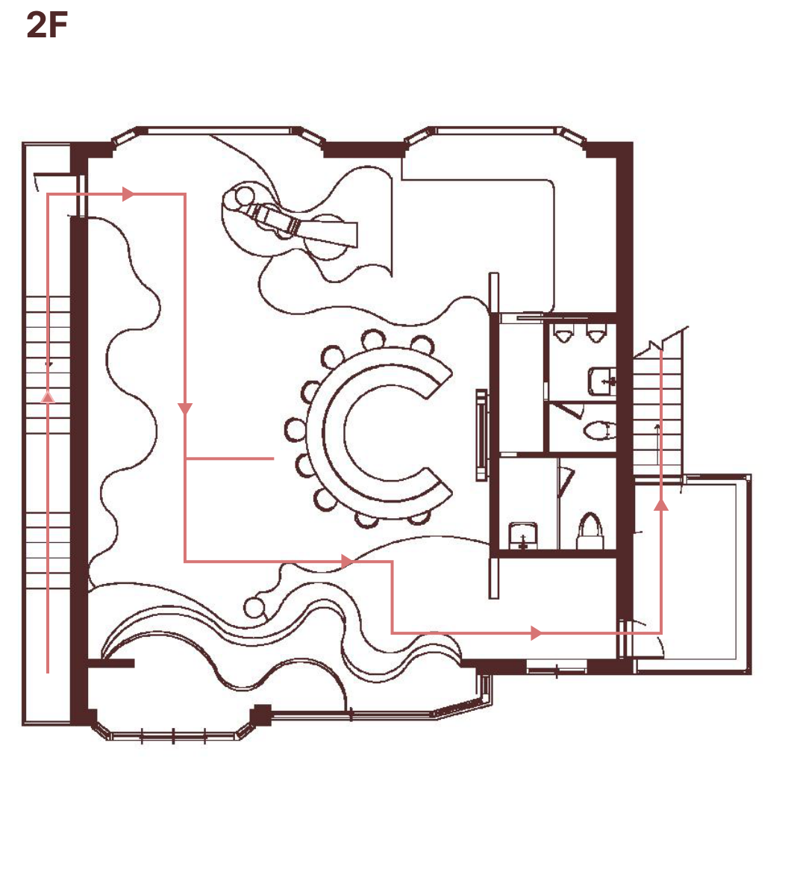
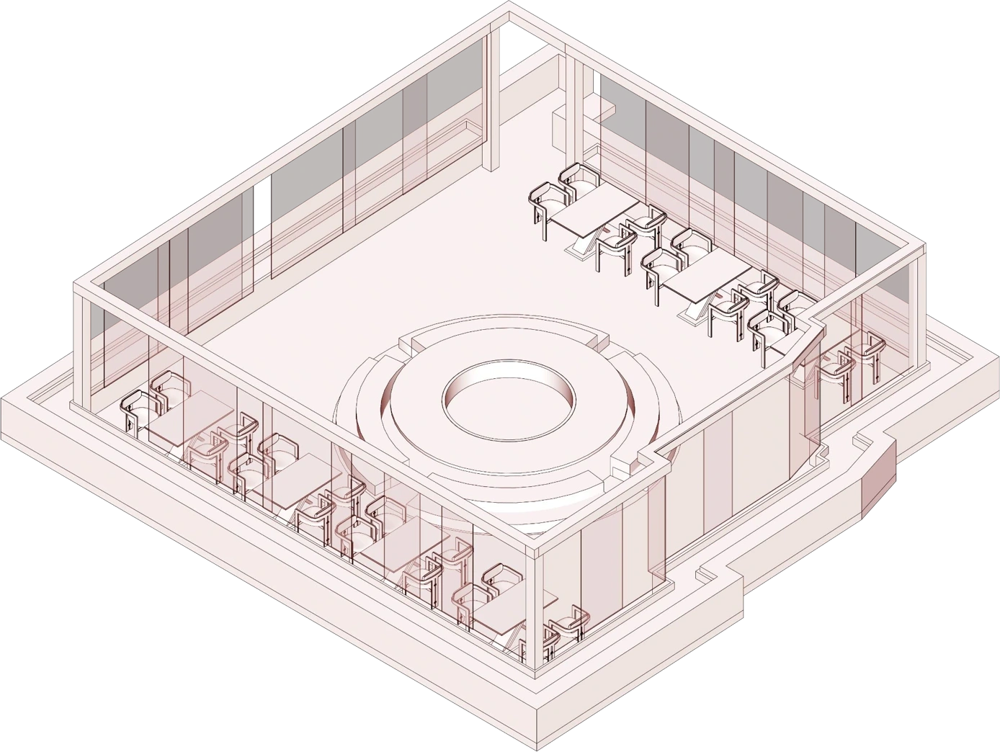
날씨에 반응하는 반실내 휴식 공간
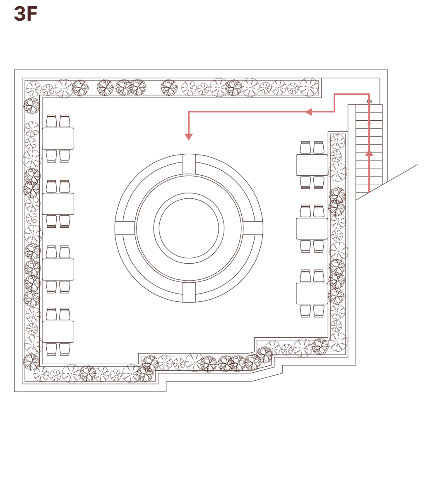
전시 이용객과 비이용객의 진입 동선을 분리하고 예약제를 통해 협소한 공간의 동선 충돌을 줄이는 계획이다.
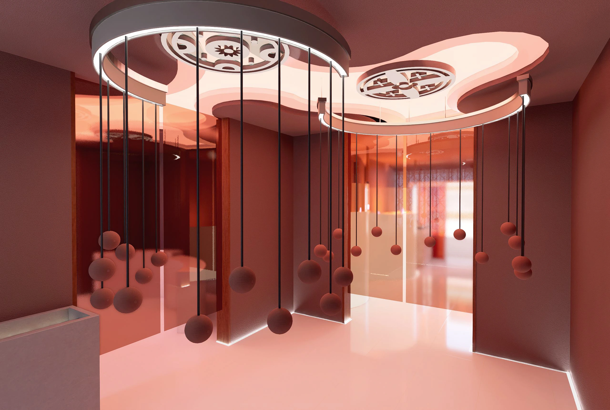
향 주머니를 통해 시각 정보 없이 선호하는 향을 탐색한다.
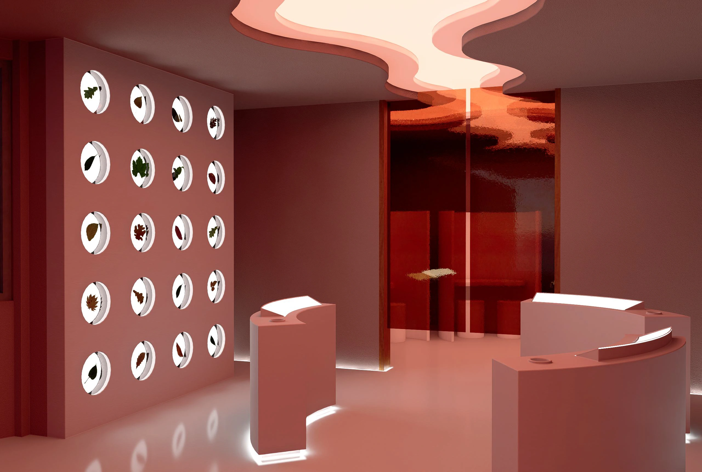
선택한 향의 배지를 태그하고 재료의 형태와 질감을 경험한다.
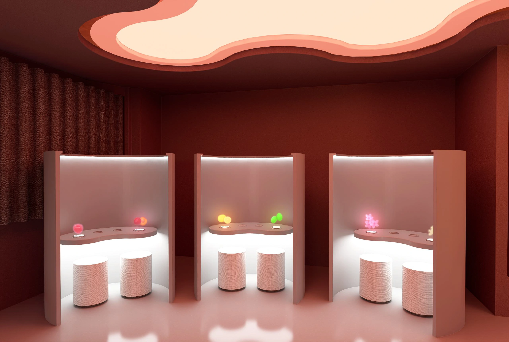
홀로그램을 통해 선택한 재료의 정체를 확인한다.
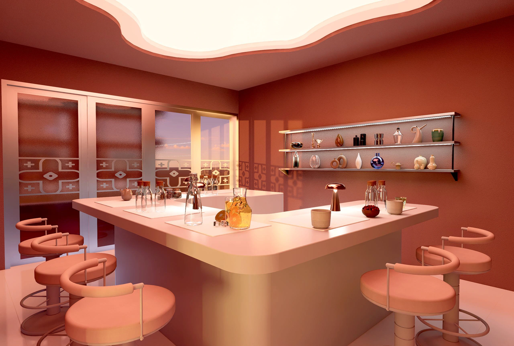
앞선 감각 경험을 개인화된 전통 음료 체험으로 연결한다.
날씨 데이터를 기반으로 창과 천장의 개폐를 제어하는 설계 시나리오를 제안한다. 실제 설치 및 성능 검증 결과가 아닌 기술 적용 계획이다.
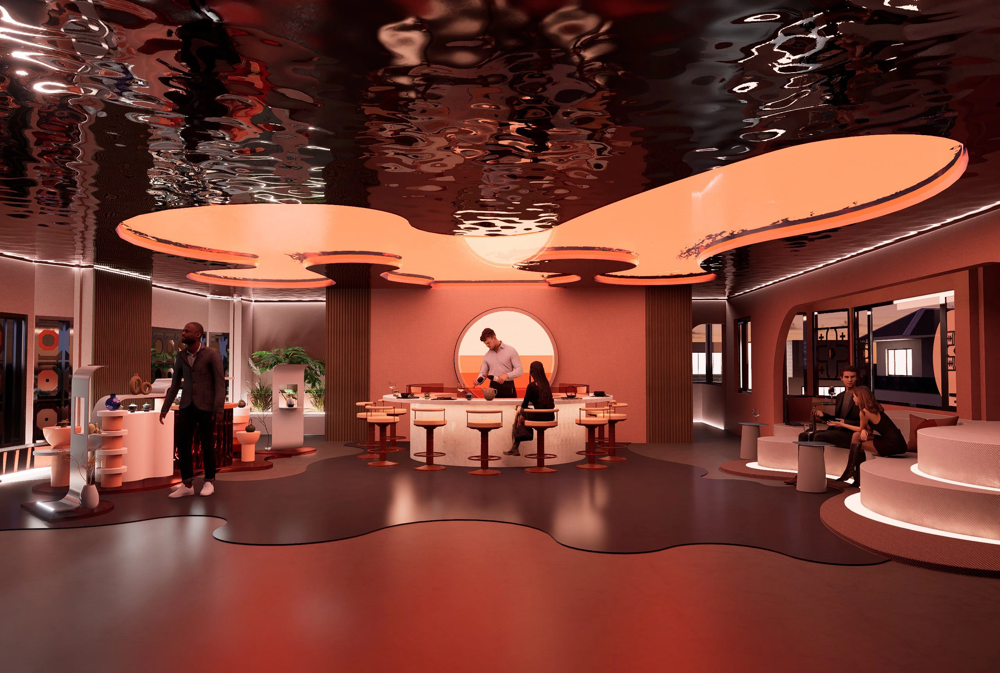
조리개 개폐를 통해 자연광과 외부로 유출되는 조명을 조절하는 계획이다.
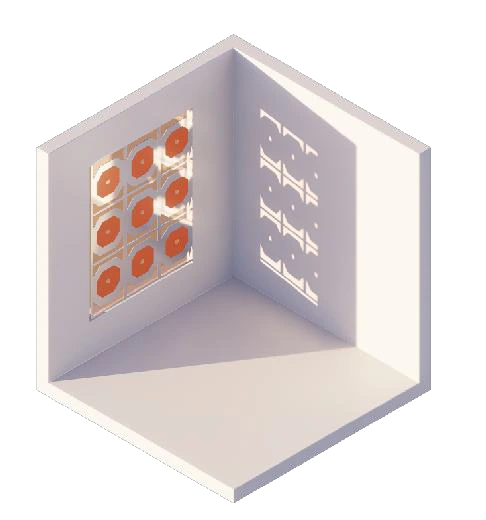
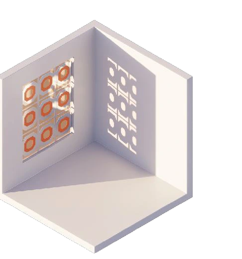
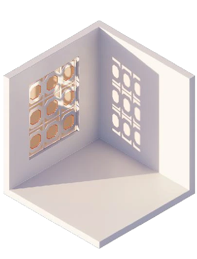
PDLC 스마트 글라스와 개폐형 천장을 활용해 날씨에 대응하는 반실내 공간을 제안한다.
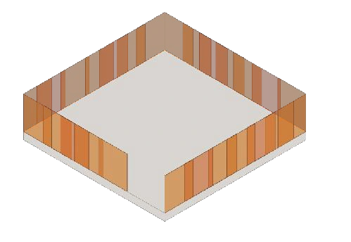
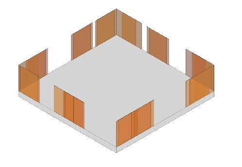
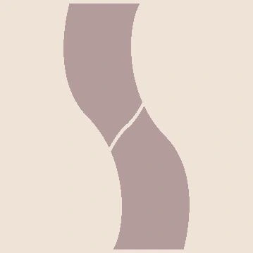
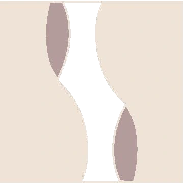